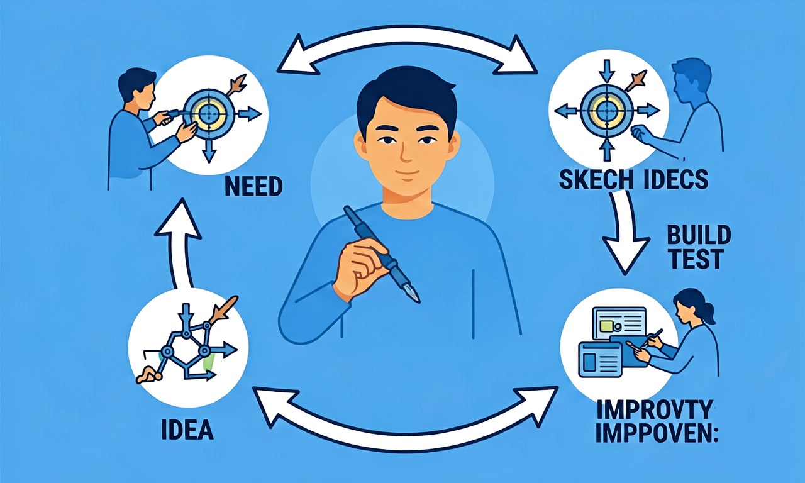
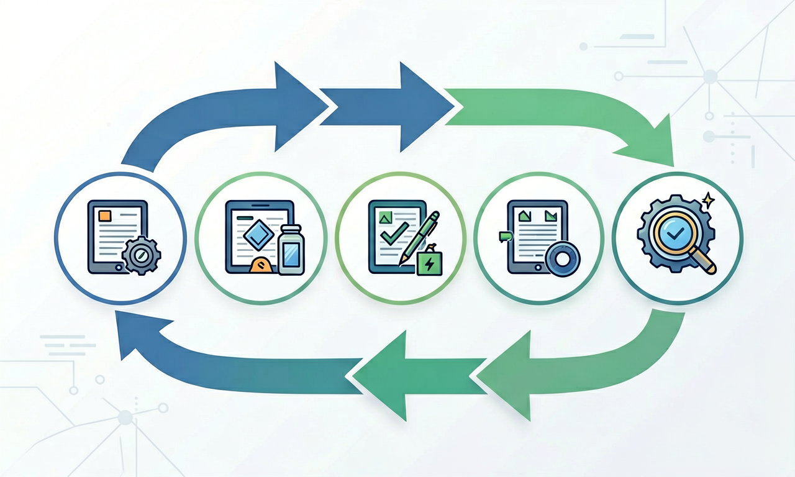

从发现问题到改进作品——像工程师一样，按步骤设计、制作、测试、迭代，把想法变成现实。

选择或输入后，这节课会围绕你的问题展开。
班级图书角的书经常掉地上，你想设计一个挡书条。按照工程实践，最先应该做什么？
先选一个，错了正好暴露你的前概念，我们一起纠正。
工程设计有一个循环过程：①明确问题（谁需要什么？有什么限制？）→ ②设计方案（头脑风暴，画草图，选最佳方案）→ ③制作（选材料、用工具加工）→ ④测试（看是否满足需求）→ ⑤改进（根据测试结果修改，再测试）。
好的设计不是一次成功的。许多发明都经历了多次迭代——测试发现问题，改进后再测试，直到达到验收标准。
测试时要对照验收标准：挡书条能不能挡住30厘米高的书？会不会倒？会不会划伤同学？如果测试发现「挡条太矮」，就要回到改进步骤：加高挡条或换更硬的材料。
记录每次测试的结果和修改，这就是工程日志。它帮助团队记住「试过什么、为什么不行、下次怎么改」。

把步骤卡片拖到正确的顺序位置（从第一步到第五步）。
排完 5 个步骤后自动判分。
解释题：雨天同学雨伞滴水弄湿教室门口。请用工程设计五步法，写出你会怎么做（至少写前三步的具体内容）。
提示：①明确问题——谁受影响？水从哪里来？有什么限制（空间、材料、安全）？②方案——雨伞架？吸水垫？导流槽？可以画草图比较。③制作——选什么材料、用什么工具？
拓展题：如果第一次测试发现「雨伞架太小放不下大伞」，你会如何改进？
小组做的纸桥模型在测试时中间塌了。接下来最符合工程实践的做法是？
选一个并查看反馈。
迁移任务：选一件你最近想改进的小物品（如笔袋、书立），用五步法画一张设计草图并写出测试标准。